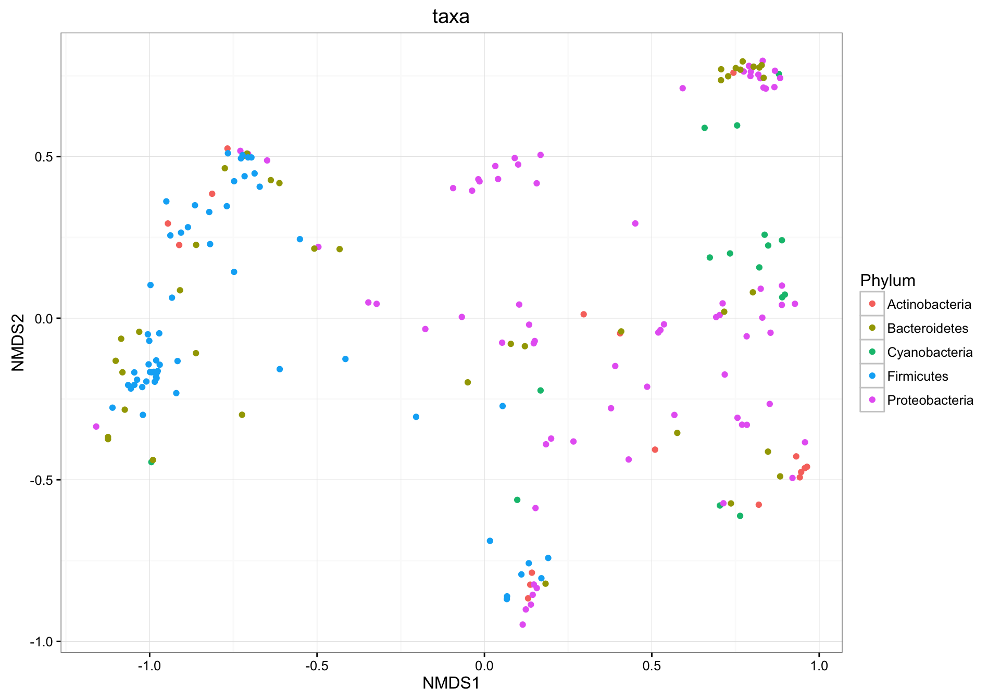
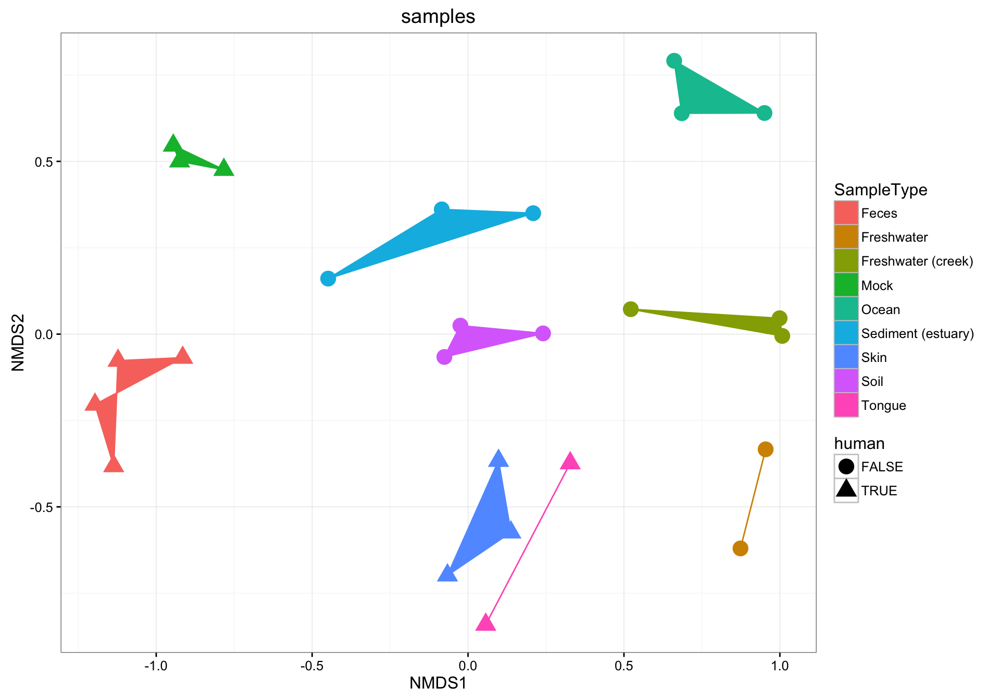
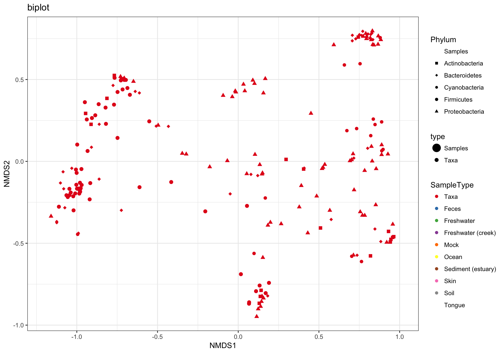
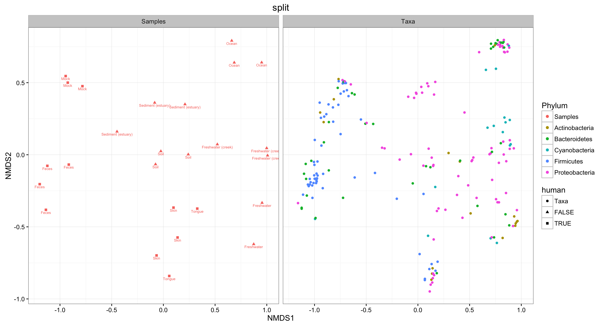
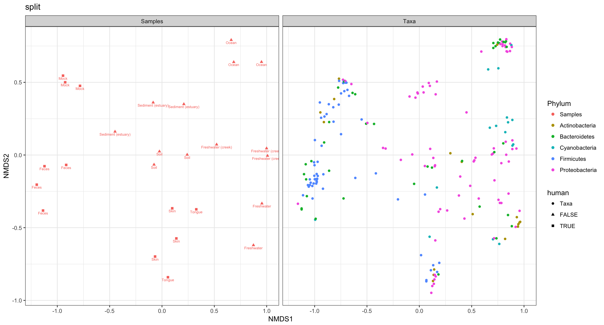
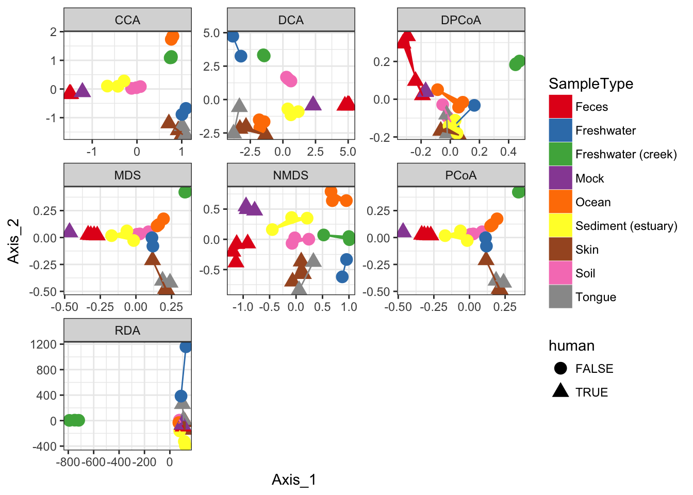
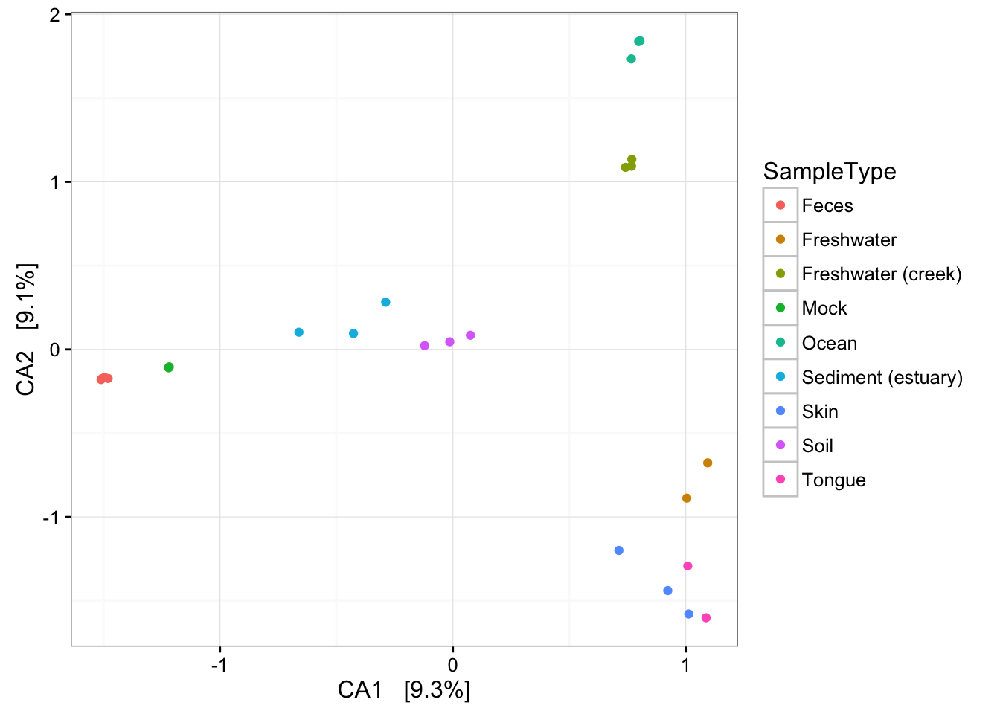
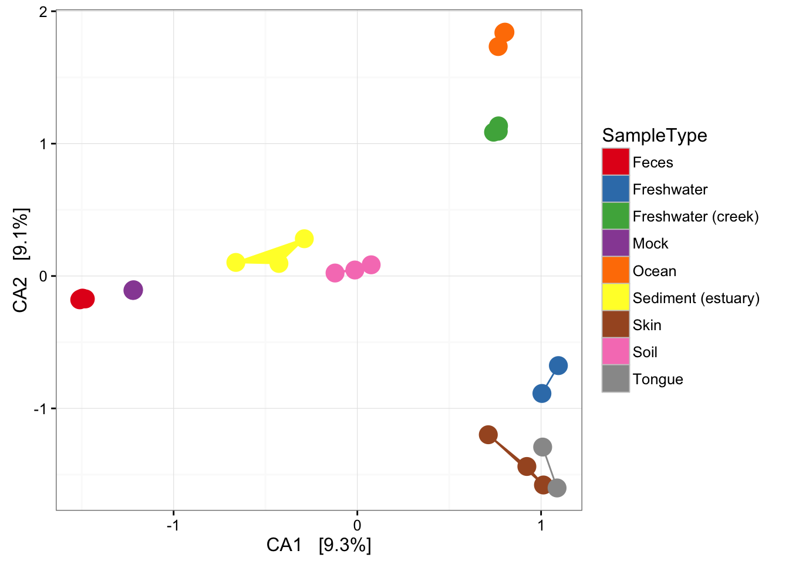
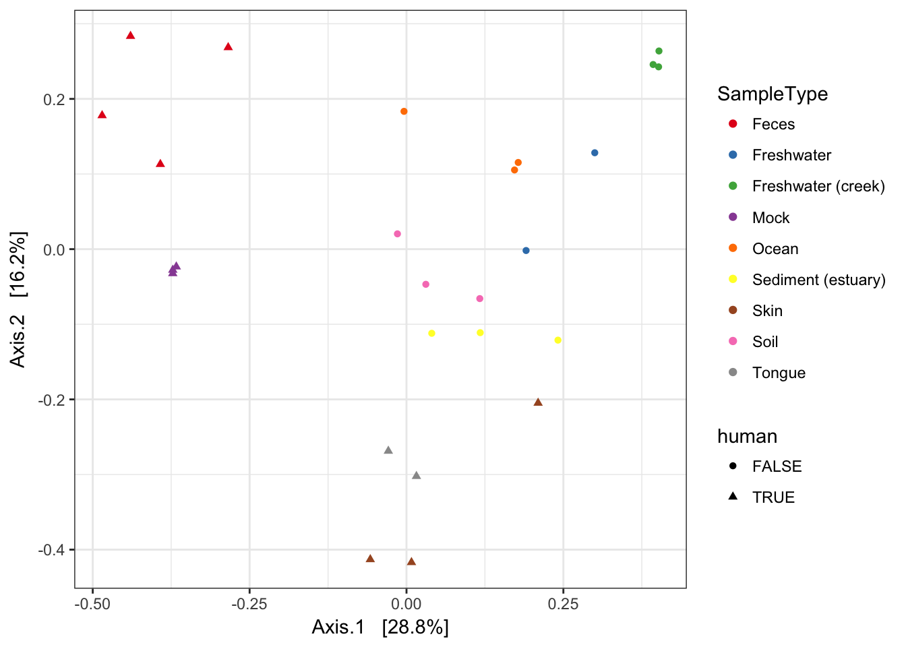
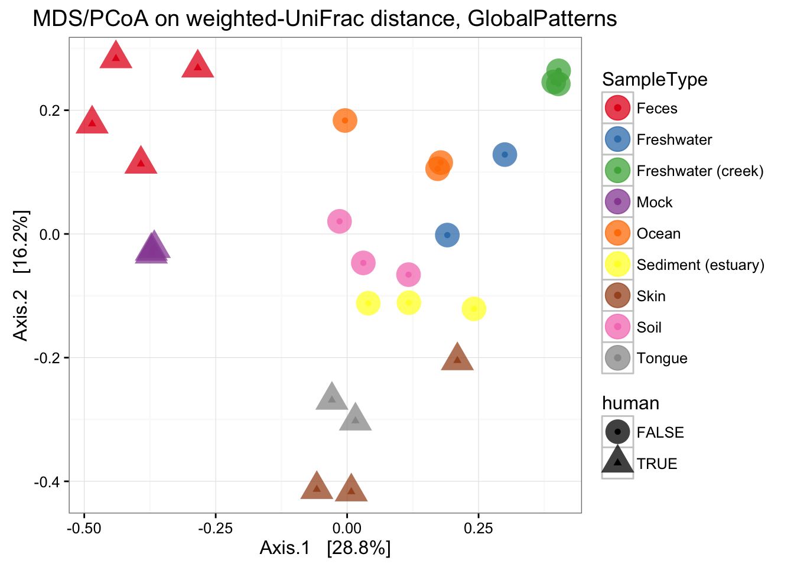

Ordination Plots
Sat Jul 16 20:00:53 2016
The operation of the plot_ordination function also depends a lot on the
distance
and
ordinate
functions.
See their tutorials for further details and examples.
Also, the phyloseq package includes a “convenience function” for subsetting from large collections of points in an ordination, called subset_ord_plot. There is a separate subset_ord_plot tutorial for further details and examples.
Load Packages, Prepare Data
Load the necessary packages and data.
library("phyloseq"); packageVersion("phyloseq")## [1] '1.16.2'data(GlobalPatterns)
library("ggplot2"); packageVersion("ggplot2")## [1] '2.1.0'library("plyr"); packageVersion("plyr")## [1] '1.8.4'ggplot2 package theme set. See the ggplot2 online documentation for further help.
theme_set(theme_bw())We want to filter low-occurrence, poorly-represented OTUs from this data, because they are essentially noise variables for the purposes of this tutorial. In practice, you should probably perform and clearly-document well-justified preprocessing steps, which are supported in the phyloseq package with examples and details on a dedicated preprocessing tutorial.
In this case preprocessing is especially useful for showing graphically the high-level patterns in the data, as well as creating examples that compute in a short amount of time. Your reasoning and decisions in preprocessing are extremely important, and up to you. I am using several different methods of preprocessing here, for illustration and because the extent of data reduction is useful for my purposes. However, I make no assertion that these are the “optimum” approach(es) for your data and research goals, but rather, I highly recommend that you think hard about any preprocessing that you do, document it completely, and only commit to including it in your final analysis pipeline if you can defend the choices and have checked that they are robust.
To quickly demonstrate and compare the results of different ordination methods, I will first further filter/preprocess the OTUs in GP1. I want to include some phylogenetic tree-based ordinations, which can be slow to calculate. Since the goal of this exercise is to demonstrate the plot_ordination capability, and not necessarily reveal any new knowledge about the Global Patterns dataset, the emphasis on this preprocessing will be on limiting the number of OTUs, not protecting intrinsic patterns in the data.
Remove OTUs that do not show appear more than 5 times in more than half the samples
GP = GlobalPatterns
wh0 = genefilter_sample(GP, filterfun_sample(function(x) x > 5), A=0.5*nsamples(GP))
GP1 = prune_taxa(wh0, GP)Transform to even sampling depth.
GP1 = transform_sample_counts(GP1, function(x) 1E6 * x/sum(x))Keep only the most abundant five phyla.
phylum.sum = tapply(taxa_sums(GP1), tax_table(GP1)[, "Phylum"], sum, na.rm=TRUE)
top5phyla = names(sort(phylum.sum, TRUE))[1:5]
GP1 = prune_taxa((tax_table(GP1)[, "Phylum"] %in% top5phyla), GP1)That still leaves 204 OTUs in the dataset, GP1.
We will want to investigate a major prior among the samples, which is that some are human-associated microbiomes, and some are not. Define a human-associated versus non-human categorical variable:
human = get_variable(GP1, "SampleType") %in% c("Feces", "Mock", "Skin", "Tongue")
sample_data(GP1)$human <- factor(human)Four main ordination plots
The plot_ordination function supports four basic representations of an ordination. For some methods, like PCoA/MDS on a distance matrix of samples, any methods displaying OTUs is not supported because OTUs are not part of the ordination in that case.
(1) Just OTUs
Let’s start by plotting just the OTUs, and shading the points by Phylum. Note that even in our “trimmed” dataset there are ntaxa(GP1)= 204 OTUs.
GP.ord <- ordinate(GP1, "NMDS", "bray")
p1 = plot_ordination(GP1, GP.ord, type="taxa", color="Phylum", title="taxa")
print(p1)
This is a complicated looking plot, but that’s not necessarily good. There is actually a lot of overplotting/occlusion, which means that the high number of points is getting in the way of our visual understanding of the data. There are several ways to deal with this in ggplot2, for example, facetting:
p1 + facet_wrap(~Phylum, 3)
(2) Just samples
Next, let’s plot only the samples, and shade the points by “SampleType” while also modifying the shape according to whether they are human-associated. There are a few additional ggplot2 layers added to make the plot even nicer…
p2 = plot_ordination(GP1, GP.ord, type="samples", color="SampleType", shape="human")
p2 + geom_polygon(aes(fill=SampleType)) + geom_point(size=5) + ggtitle("samples")
(3) biplot graphic
The plot_ordination function can also automatically create two different graphic layouts in which both the samples and OTUs are plotted together in one “biplot”. Note that this requires methods that are not intrinsically samples-only ordinations. For example, this doesn’t work with UniFrac/PCoA.
p3 = plot_ordination(GP1, GP.ord, type="biplot", color="SampleType", shape="Phylum", title="biplot")
# Some stuff to modify the automatic shape scale
GP1.shape.names = get_taxa_unique(GP1, "Phylum")
GP1.shape <- 15:(15 + length(GP1.shape.names) - 1)
names(GP1.shape) <- GP1.shape.names
GP1.shape["samples"] <- 16
p3 + scale_shape_manual(values=GP1.shape)
(4) split graphic
Hmmm. In the previous graphic the occlusion problem is pretty strong. In this case the type="split" option can be helpful, in which the samples/OTUs are separated on two side-by-side panels…
p4 = plot_ordination(GP1, GP.ord, type="split", color="Phylum", shape="human", label="SampleType", title="split")
p4
Probably much better if sample colors were black. The following function reproduces ggplot2’s default color scale. Solution borrowed from a StackOverflow page on ggplot2.
gg_color_hue <- function(n){
hues = seq(15, 375, length=n+1)
hcl(h=hues, l=65, c=100)[1:n]
}
color.names <- levels(p4$data$Phylum)
p4cols <- gg_color_hue(length(color.names))
names(p4cols) <- color.names
p4cols["samples"] <- "black"
p4 + scale_color_manual(values=p4cols)
Supported Ordination Methods
In this section I loop through different method parameter options to the plot_ordination function, store the plot results in a list, and then plot these results in a combined graphic using ggplot2.
dist = "bray"
ord_meths = c("DCA", "CCA", "RDA", "DPCoA", "NMDS", "MDS", "PCoA")
plist = llply(as.list(ord_meths), function(i, physeq, dist){
ordi = ordinate(physeq, method=i, distance=dist)
plot_ordination(physeq, ordi, "samples", color="SampleType")
}, GP1, dist)## Square root transformation
## Wisconsin double standardization
## Run 0 stress 0.1333468
## Run 1 stress 0.146027
## Run 2 stress 0.1681661
## Run 3 stress 0.1333468
## ... Procrustes: rmse 6.731122e-06 max resid 2.00535e-05
## ... Similar to previous best
## Run 4 stress 0.1385324
## Run 5 stress 0.1497848
## Run 6 stress 0.1385328
## Run 7 stress 0.1518734
## Run 8 stress 0.1497849
## Run 9 stress 0.146027
## Run 10 stress 0.1617651
## Run 11 stress 0.1333468
## ... Procrustes: rmse 1.045143e-05 max resid 2.333649e-05
## ... Similar to previous best
## Run 12 stress 0.1469145
## Run 13 stress 0.1529686
## Run 14 stress 0.1690397
## Run 15 stress 0.1493143
## Run 16 stress 0.1545803
## Run 17 stress 0.1455344
## Run 18 stress 0.1470663
## Run 19 stress 0.1657628
## Run 20 stress 0.1547677
## *** Solution reachednames(plist) <- ord_methsThe previous code chunk performed each ordination method, created the corresponding graphic based on the first two axes of each ordination result, and then stored each ggplot2 plot object in a different named element of the list named plist. The following chunk will extract the data from each of those individual plots, and put it back together in one big data.frame suitable for including all plots in one graphic.
pdataframe = ldply(plist, function(x){
df = x$data[, 1:2]
colnames(df) = c("Axis_1", "Axis_2")
return(cbind(df, x$data))
})
names(pdataframe)[1] = "method"Now that all the ordination results are combined in one data.frame, called pdataframe, we can use this to make a standard faceted ggplot scatterplot.
p = ggplot(pdataframe, aes(Axis_1, Axis_2, color=SampleType, shape=human, fill=SampleType))
p = p + geom_point(size=4) + geom_polygon()
p = p + facet_wrap(~method, scales="free")
p = p + scale_fill_brewer(type="qual", palette="Set1")
p = p + scale_colour_brewer(type="qual", palette="Set1")
p
If you want to replot a larger version of an individual plot, you can do by printing from the original plist from which pdataframe was made. Each element of plist is already a ggplot2 graphic. For example, we can replot the detrended correspondence analysis (DCA) by printing the second element of the list.
plist[[2]] 
Now add some extra layers to make it look nicer.
p = plist[[2]] + scale_colour_brewer(type="qual", palette="Set1")
p = p + scale_fill_brewer(type="qual", palette="Set1")
p = p + geom_point(size=5) + geom_polygon(aes(fill=SampleType))
p
MDS (“PCoA”) on Unifrac Distances
Use the ordinate function to simultaneously perform weightd UniFrac and then perform a Principal Coordinate Analysis on that distance matrix (first line). Next pass that data and the ordination results to plot_ordination to create the ggplot2 output graphic with default ggplot2 settings.
ordu = ordinate(GP1, "PCoA", "unifrac", weighted=TRUE)
plot_ordination(GP1, ordu, color="SampleType", shape="human")
Now make the graphic look nicer with a few additional ggplot2 layers.
p = plot_ordination(GP1, ordu, color="SampleType", shape="human")
p = p + geom_point(size=7, alpha=0.75)
p = p + scale_colour_brewer(type="qual", palette="Set1")
p + ggtitle("MDS/PCoA on weighted-UniFrac distance, GlobalPatterns")